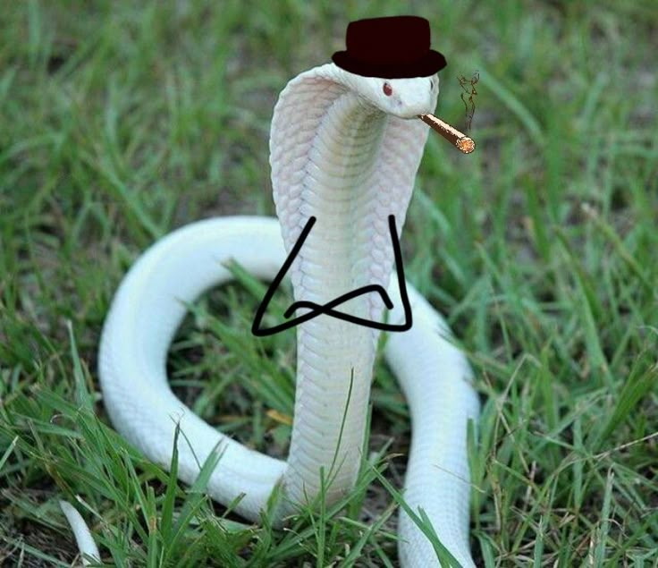
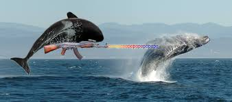

Segundo o relatório do veterinário responsável, as duas serpentes — uma píton-real e uma jiboia-constritora — haviam estabelecido, com o apoio dos tratadores, uma “sociedade simbiótica” para dividir espaço e comida em troca de boa convivência. No entanto, a jiboia teria comido três ratos a mais do que o combinado, o que causou tensão no ambiente.
A píton, sentindo-se lesada, ficou imóvel por 48 horas em protesto e, após "negociações fracassadas", emitiu o que os tratadores chamaram de "comportamento de cobrança" — uma série de movimentos ameaçadores, repetitivos e firmes, típicos quando uma serpente está exigindo algo de outra.
— “Nunca vimos algo assim. Tecnicamente, sim: a cobra cobrou outra cobra. E fez isso com muita clareza”, afirmou a bióloga Mariana Sousa.

Confusão entre cetáceos armados termina em susto e trocadilho internacional.
O oceano Atlântico foi palco de uma situação jamais vista pela ciência: uma baleia baleou outra baleia, e o caso viralizou nas redes com a manchete que ninguém conseguiu ignorar — “Baleia baleia baleia”.
Segundo relatos de biólogos que monitoravam a movimentação migratória, duas baleias-jubarte estavam em desacordo sobre a liderança de um grupo quando, inesperadamente, uma delas sacou... uma baleia-armada — espécie de peixe comum na região. O gesto foi interpretado como um ataque simbólico, mas o susto foi real.
— "A baleia baleou, mas com uma baleia — não com arma de fogo, antes que pensem", explicou o oceanógrafo Dr. Luiz Marinho, tentando conter o riso.
Apesar do pânico inicial, ninguém saiu ferido. A baleia "baleada" apenas se ofendeu e nadou para longe, prometendo abrir um processo no Tribunal Internacional das Profundezas. Enquanto isso, linguistas e jornalistas seguem tentando explicar a manchete para quem não fala português.
